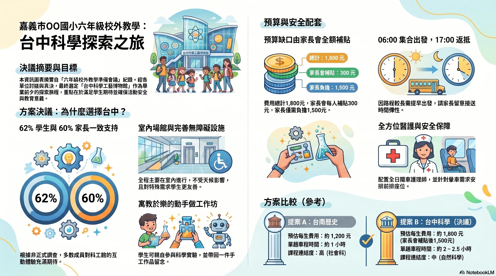
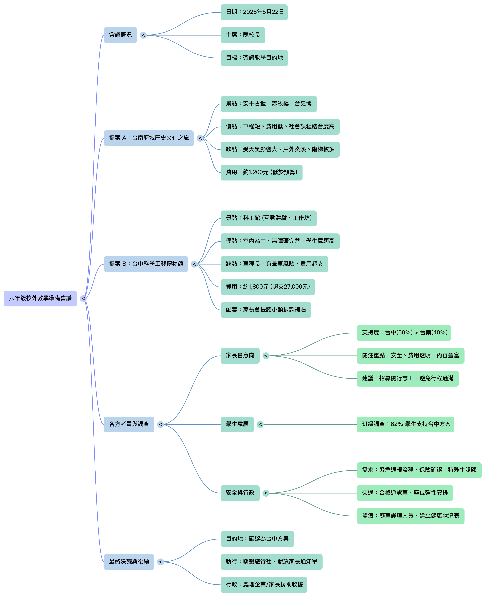

實際練習了什麼
- 把學員分成校長室、學務處、總務處、班導師、家長會五個角色。
- 用 AI 幫自己的角色準備會議發言、可能反對意見與回應方式。
- 現場模擬六年級校外教學準備會議，決定台南或台中方案。
- 用手機錄音，理解語音轉文字與會議紀錄之間的差異。
- 把錄音、議程、提案、問卷交給 AI，產出正式會議紀錄與後續分工。
- 用 NotebookLM 將同一包資料轉成心智圖、測驗、簡報與影片摘要。
C03 | 2026.05.19
第三堂實際走了一次「國小六年級校外教學準備會議」：先用 AI 準備角色立場，現場開會並錄音，再把錄音和附件交給 AI 整理成會議紀錄、心智圖、簡報與影片摘要。
原本第三堂教案偏向寫信、潤稿與長文摘要；實際上課時，課程轉成更完整的「會議專案」操作。這反而更能呈現 AI 的真實工作流：不是單點問答，而是先理解資料、再產出可用成果，最後仍由人檢查與決策。
Meeting Flow
第三堂的完整流程不是「丟給 AI 就好」，而是每一步都先讓人設定目的，再讓 AI 補速度與整理能力。
開會通知、議程、提案 A/B、比較表、問卷結果，先知道資料各自用途。
用「我是誰、我的立場、我想達成什麼」請 AI 幫忙準備發言。
五組依立場討論台南或台中方案，最後決議採台中科工館。
把會議錄音與附件交給 AI，要求校正專有名詞、數字與方案名稱。
NotebookLM 生成心智圖、測驗、簡報、影片摘要，快速看見資料價值。
Role Lab
點選不同角色，看看上課時各組要練習的角色目標、AI 提示詞與可能產出。這裡的重點是：先講清楚自己的立場，AI 才能幫你準備有用的發言。
立場中立，目標是在會議結束前形成共識，避免校外教學變成爭議事件。
我是一所國小的校長，今天要主持六年級校外教學準備會議，有台南文化之旅與台中科工館兩個提案。請幫我整理兩方案優缺點、可能衝突點，以及一段正式但親切的開場白。
兩方案比較清單、2 分鐘開場白、各單位可能反對意見與主持回應。
Decision Board
課堂會議本身很簡單：A 或 B。困難的是每個角色都帶著不同關注點，AI 可以幫忙準備說法，但最後仍要人做判斷。
Recorder Lab
這堂課最實用的部分，是把「錄音檔」和「會議附件」一起交給 AI。只丟錄音容易誤判；加上議程、提案、比較表與問卷，AI 才能校正人名、地名、金額與決議。
手機語音備忘錄或錄音 App
議程、提案、問卷、比較表
說明每份附件用途與輸出格式
正式會議紀錄、決議、分工期限
我是這次會議負責做會議記錄的承辦人。上傳的 M4A 是完整會議錄音，其他附件是本次會議使用的議程、提案與問卷資料。請幫我整理成正式會議紀錄，包含會議目的、各單位意見、決議事項、後續分工與期限。若錄音辨識有同音錯字，請以附件資料中的人名、地名、方案名稱與數字為主。
NotebookLM Studio
NotebookLM 的重點是「只根據你給它的來源回答」。第三堂用同一包會議資料，示範了摘要、心智圖、測驗、簡報和影片摘要。
左側來源區是 NotebookLM 的核心。它不是到網路亂找答案，而是根據這些來源回答問題，還可以標示答案引用自哪份資料。
Student Works
這堂課最後不是只有「知道 AI 可以用」，而是看到同一包會議資料可以被整理成多種可交付成果。

把會議決議轉成視覺化摘要：為什麼選台中、預算如何補、行程和安全配套如何說明。

會議概況、提案 A/B、各方考量與最終後續被整理成一張可快速瀏覽的圖。
Quick Check
確認第三堂課的核心觀念：角色、資料來源、會議紀錄、NotebookLM 與人工判斷。